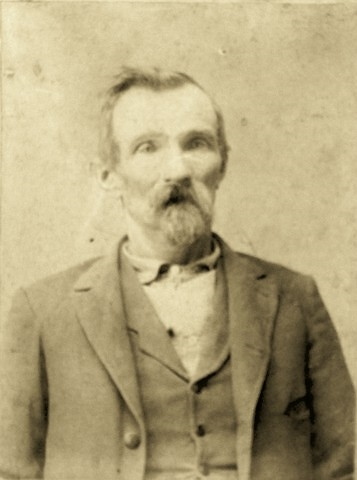
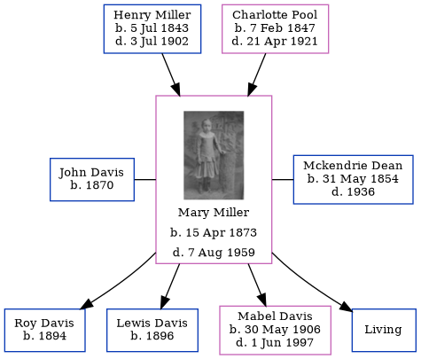

Henry William Charles Miller 1843 - 1902
[ Home ] | [ Calendar ] | [ Surnames Index ] | [ Census Index ] | [ Family History ]Henry Miller, the husband of Charlotte Maria Pool (the second cousin four-times-removed on the mother's side of Nigel Horne), was born in New Orleans, Orleans, Louisiana, USA on Jul 5, 18431,2 and married Charlotte (with whom he had 9 children: Oliver, Frances, Samuel, Mary Ann, Josie, Grover Robert, Alfred, Verlin and Ethel H) in Clay, Indiana, USA on Oct 24, 18653.
During his life, he was living in Lewis, Indiana on Jun 1, 18701; in Clay on Jun 1, 18802; and in Owen, Indiana, USA on Jun 1, 19004.
He died on Jul 3, 1902.
Children
- Oliver was born c. 1868
- Frances was born c. 1869
- Samuel was born in 1871
- Mary Ann was born on Apr 15, 1873
- Josie was born in 1878
- Grover Robert was born on Sep 27, 1884
- Alfred was born c. 1888
- Verlin was born on May 1, 1890
- Ethel H was born c. 1894
Citations
- US Census 1870 - Findmypast (was age 29)
- Us Census 1880 - Findmypast (was age 38 and the head of the household)
- United States Marriages - Findmypast
- US Census 1900 - Findmypast (was the head of the household)
Media
Henry W C Miller

United States Marriages - R_1128536728
United States Marriages - FS/MAR/37373275/1
US Census 1870 - USC/1870/004263289/00219/010
United States Marriages - R_1128536728/1
Family Tree
Generated by ged2site. Last updated on Jun 11, 2024